Лабораторная работа №2
Архитектура компьютеров
Безлепкина Т.И.
Российский университет дружбы народов, Москва, Россия
06 марта 2026
Информация
Докладчик
- Безлепкина Татьяна Игоревна
- Студентка НКАбд-01-25
- Таня
- Российский университет дружбы народов
- 1032253539@rudn.ru

Цель работы
Изучить идеологию и применение средств контроля версий. Освоить умения по работе с git.
Задание
Создать базовую конфигурацию для работы с git. Создать ключ SSH. Создать ключ PGP. Настроить подписи git. Зарегистрироваться на Github. Создать локальный каталог для выполнения заданий по предмету.
Актуальность темы
Git — наиболее популярная распределённая система контроля версий, используемая в большинстве современных IT-проектов. Навыки работы с Git необходимы каждому разработчику для эффективной командной работы, отслеживания изменений и управления версиями кода.
Объект и предмет исследования.
Объект: распределённые системы контроля версий. Предмет: процесс работы с Git: создание репозиториев, управление коммитами, ветвление и слияние, работа с удалёнными репозиториями
Научная новизна.
Систематизация основных приёмов работы с Git для эффективного управления версиями в учебных и научных проектах, включая работу с ветками, разрешение конфликтов и организацию совместной разработки.
Практическая значимость работы.
Освоение базовых команд Git для повседневной работы. Возможность отслеживания истории изменений проекта. Организация командной работы над кодом и документацией. Подготовка к профессиональной разработке в IT-индустрии. Интеграция с платформами GitHub/GitLab для хранения и совместного доступа к проектам.
Теоретическое введение
Системы контроля версий (VCS) применяются при коллективной работе над проектами, позволяя фиксировать изменения, совмещать правки разных участников и возвращаться к более ранним версиям. В классических централизованных системах (CVS, Subversion) используется единый репозиторий на сервере, где хранятся все версии файлов с дельта-компрессией. Распределённые системы (Git, Mercurial) не требуют обязательного центрального репозитория. VCS также обеспечивают отслеживание конфликтов, блокировку файлов и ведение журнала изменений с информацией об авторах.
Выполнение лабораторной работы
Установка git
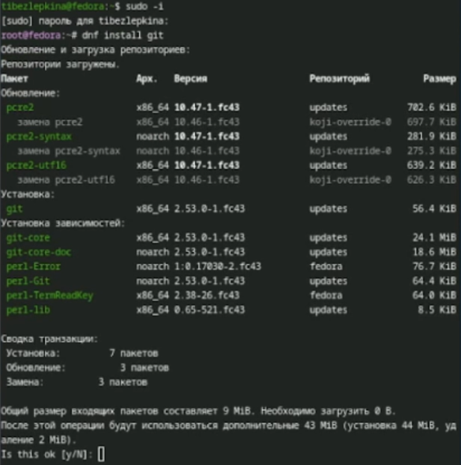
—Установка gh
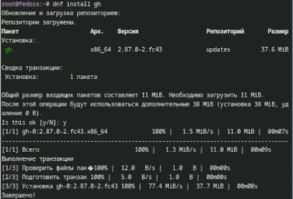
— Базовая настройка git,зададим имя и email владельца репозитория —Настроим utf-8 в выводе сообщений git,зададим имя ветки,а также параметры
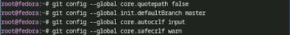
—Создадим ssh ключ
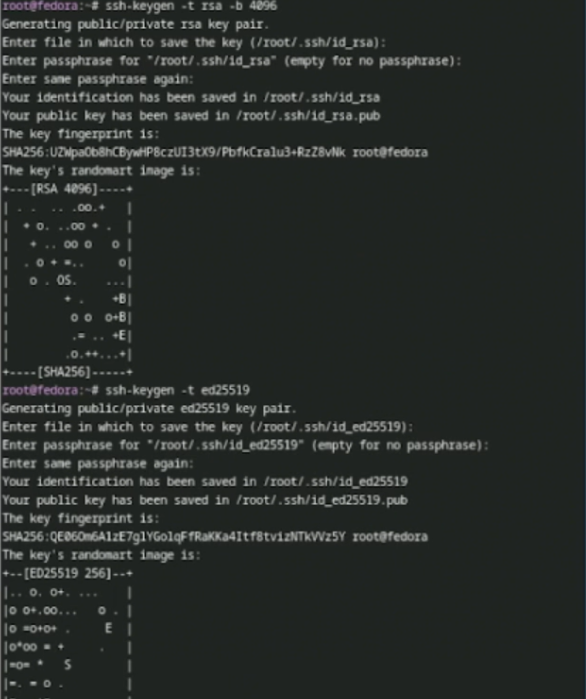
—Добавим в github
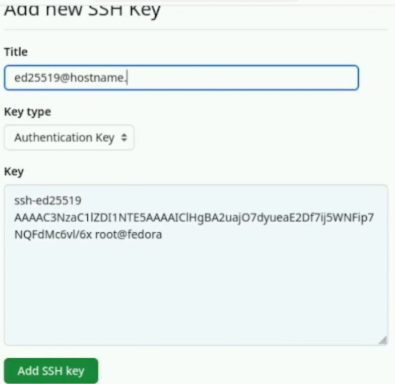
—Cоздадим pgp ключ
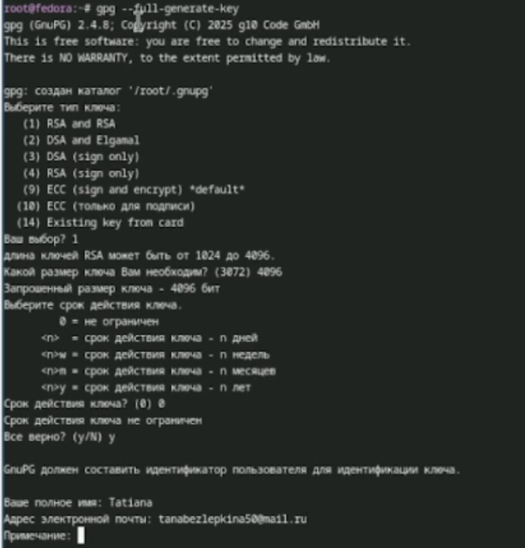
—Копируем отпечаток приватного ключа
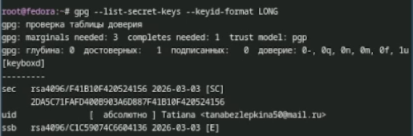
—Экспортируем ключ по его отпечатку
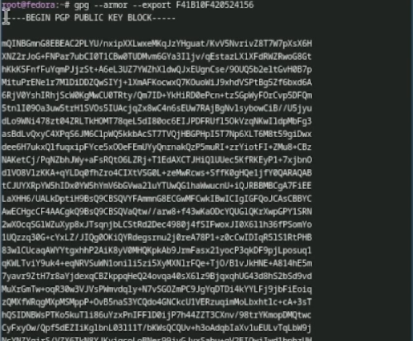
—Добавим ключ pgp в github
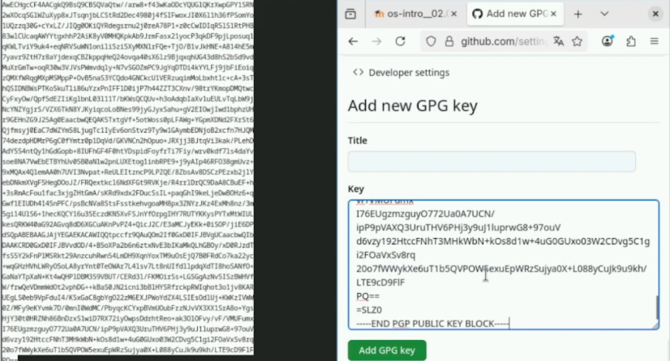
—Настройка автоматических подписей коммитов git
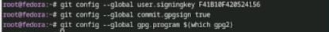
—Авторизация в gh
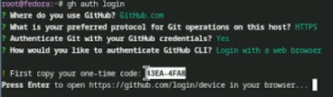
—Продолжение работы с gh
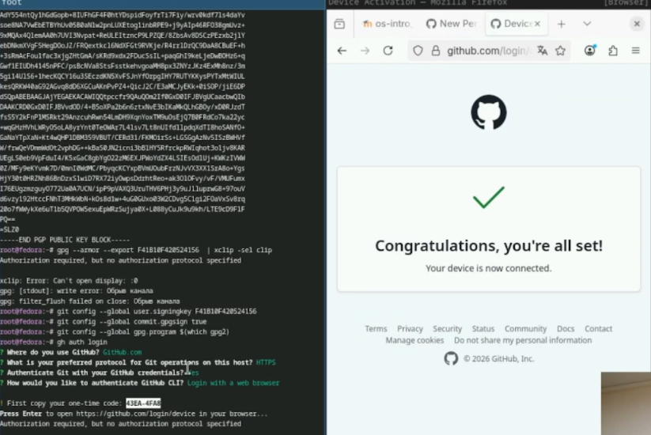
— Создание репозитория курса на основе шаблона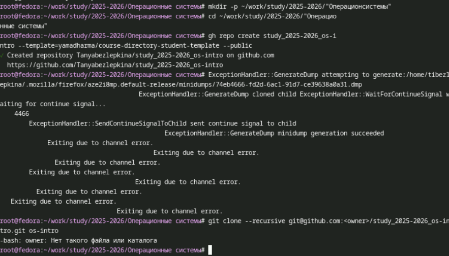
—Продолжение загрузки шаблона
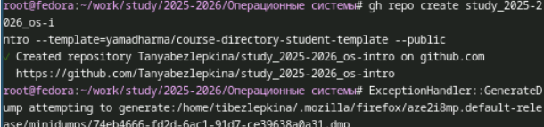
—Настройка каталога курса
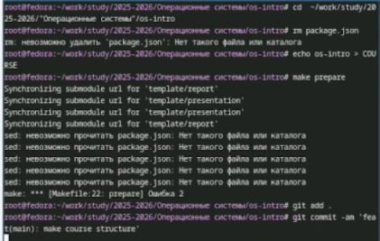
Отправка файлов на сервер
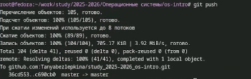
Вывод
В ходе выполнения работы были изучены основные принципы работы систем контроля версий и получены практические навыки использования Git. Освоены базовые команды для создания репозиториев, фиксации изменений, работы с ветками и удалёнными репозиториями. Полученные знания позволяют эффективно организовать совместную работу над проектами, отслеживать историю изменений и управлять версиями кода, что является необходимым навыком для современного разработчика.